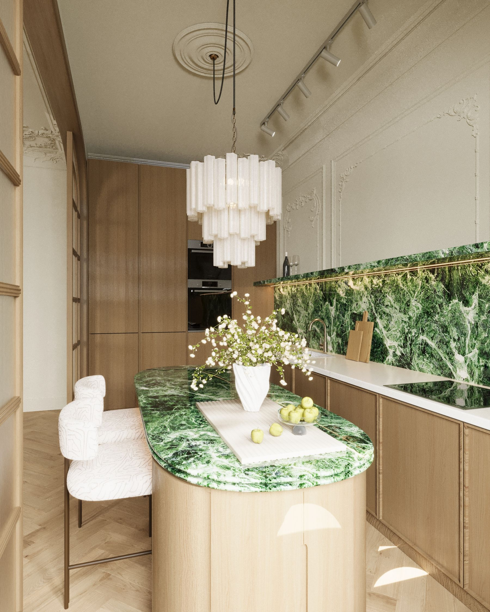
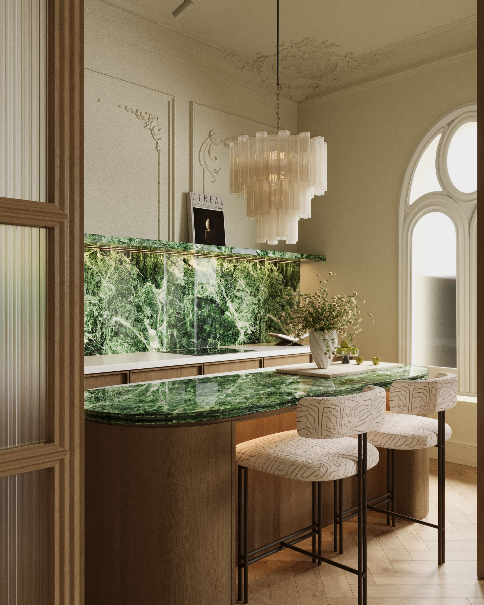
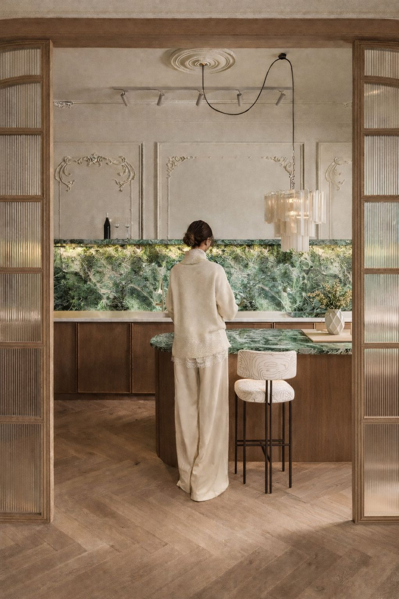
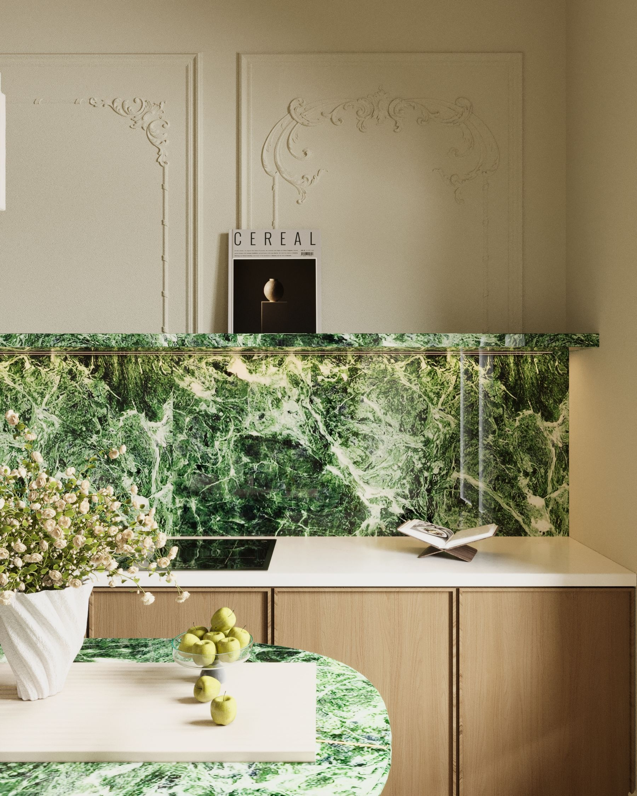
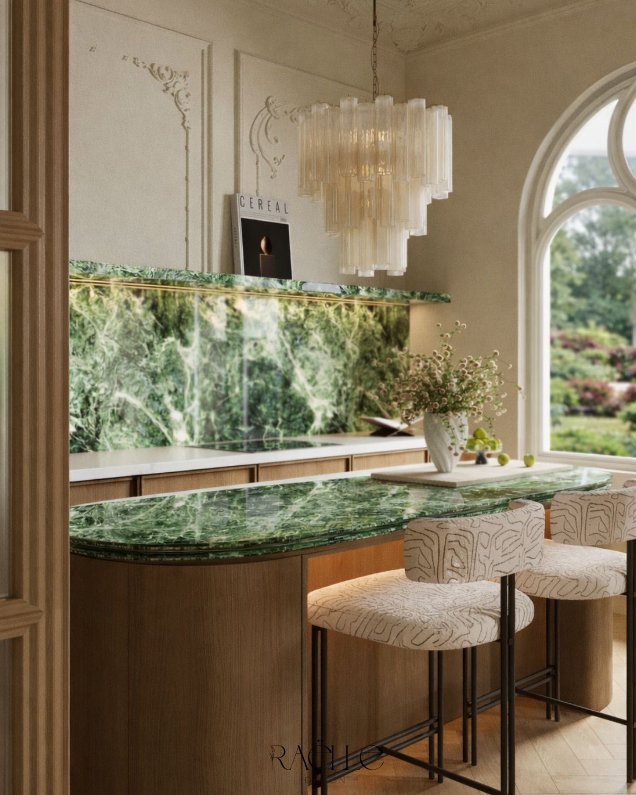
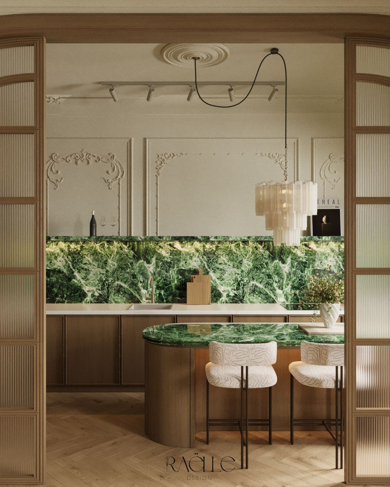
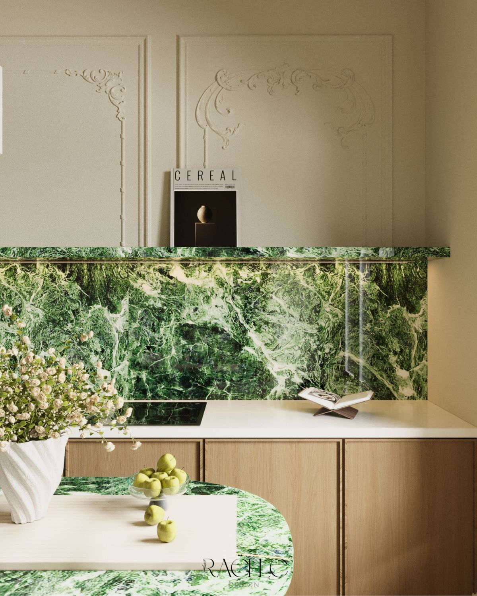

Residential — Bucharest, 2026
01 — Concept
The room starts from a single material — a wide-veined green marble, cut across the island and the counter — and a decision that the kitchen shouldn't look new. The original plaster mouldings on the wall were kept, and the light oak cabinetry was drawn to look like it grew up next to them, not added afterward.

The rounded corner stands in for a demolished wall — a curve where a right angle used to be.

03 — Material
The backsplash repeats the island slab, cut from the same block of stone — the white veining continues from one surface to the other, like a map that doesn't stop at the edge of the counter.

Three stools, a chandelier made of glass tubes, and an arched window — the only symmetrical moment in the room.

05 — Atmosphere
In the morning, light comes straight through the arched window onto the counter. In the evening, the LED strip under the marble shelf is the only thing still on — the room shrinks down to the size of the island.
06 — Details


Ți-a plăcut acest proiect? Rezervă o consultanță gratuită și hai să dăm viață ideilor tale împreună!
Contactează-mă